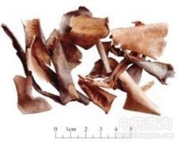

冬瓜皮

拼音
Dōnɡ Guā Pí
别名
白瓜皮、白东瓜皮
来源
本品为葫芦科植物冬瓜Benincasa hispida （THunb。） Cogn。 的干燥外层果皮。食用冬瓜时，洗净，削取外层果皮，晒干。
生境分布
全国大部地区均产。
药材特点
一年生蔓生或架生草本。茎被黄褐色硬毛及长柔毛，有棱沟，长约6m。单叶互生；叶柄粗壮，长5-20cm，被黄褐色硬毛及长柔毛；叶片肾状近圆形，宽15-30cm5-7浅裂或有时中裂，裂片宽卵形，先端急尖，边缘有小齿，基部深心形，两面均被粗毛，叶脉网状，在叶背面稍隆起，密被毛。郑须生于叶腋，2-3歧，被粗硬毛和长柔毛。花单性，雌雄同株；花单生于叶腋，花梗被硬毛；花萼管大辩论，裂片三角卵形，边缘有锯齿，反折；花冠黄色，5裂至基部，外展；雄花有雄蕊3，花丝分生，花药卵形，药室呈S形折曲；雌花子房长圆筒形或长卵形，密被黄褐色长硬毛，柱头3，略扭曲。瓠果大型，肉质，长圆柱状或近球形，长25-60cm，径10-25cm，表面有硬毛和蜡质白粉。种子多数，卵形，白色或淡黄色，压扁。花期5-6月，果期6-8月。
性状
本品为不规则的碎片，常向内卷曲，大小不一。外表面灰绿色或黄白色，被有白霜，有的较光滑不被白霜；内表面较粗糙，有的可见筋脉状维管束。体轻，质脆。无臭，味淡。
性味
甘，凉。
功能主治
利尿消肿。用于水肿胀满，小便不利，暑热口渴，小便短赤。
用法用量
9～30g。
化学成分
含蜡类及树脂类物质。瓤含葫芦巴碱、腺嘌呤等。
药理作用
1：非肾性水肿恢复期患者内服冬瓜皮煎剂2两：并饮水1000毫升，在服药后2小时内排出尿量较对照组显着增加，2～4小时之间，则较对照组减少
摘录
《全国中草药汇编》